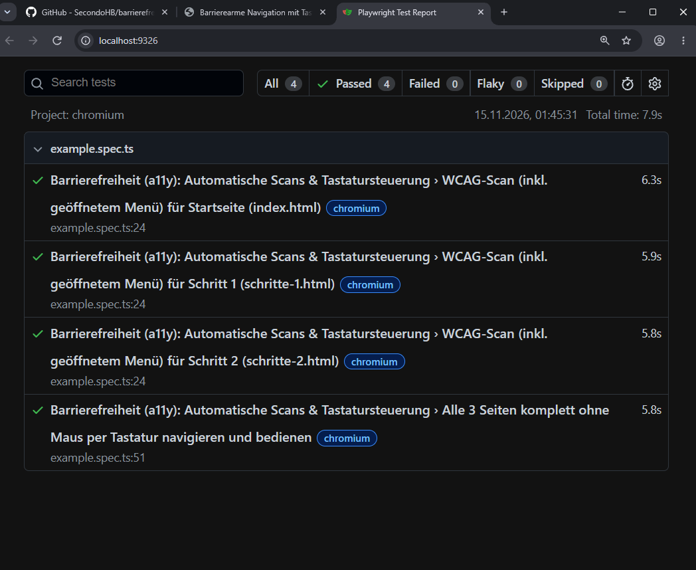
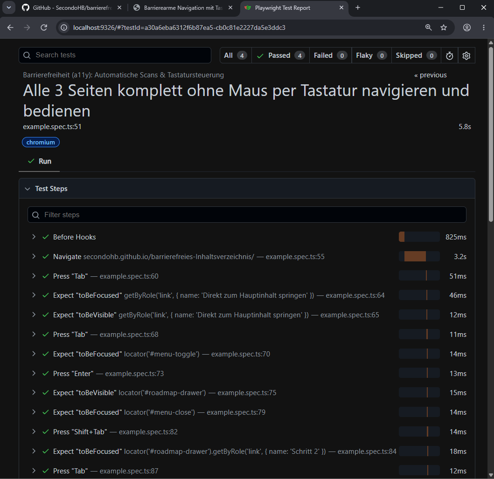
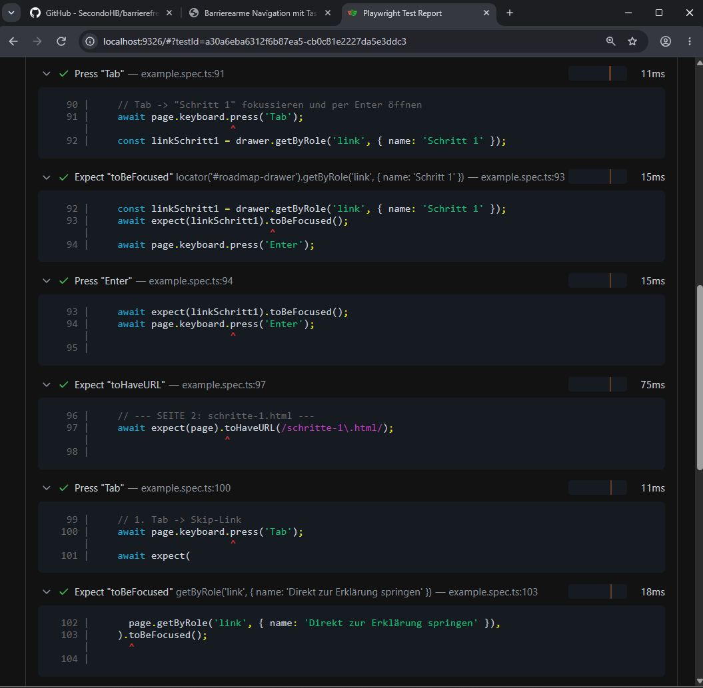
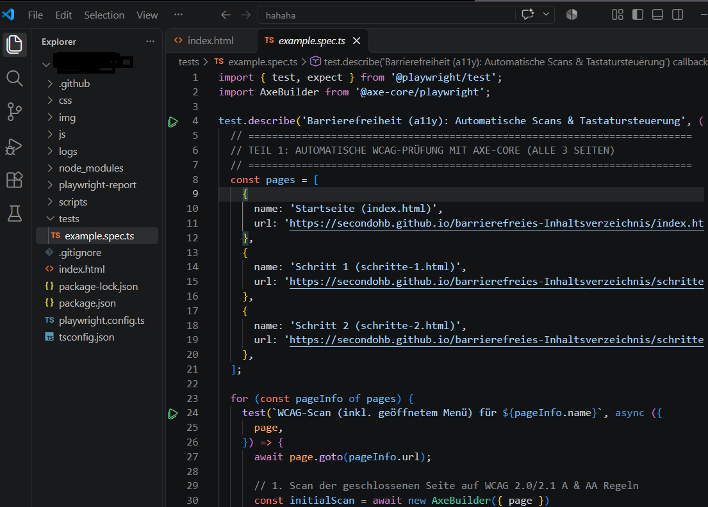

example.spec.js
import { test, expect } from '@playwright/test';
import AxeBuilder from '@axe-core/playwright';
test.describe('Barrierefreiheit (a11y): Automatische Scans & Tastatursteuerung', () => {
// ===========================================================================
// TEIL 1: AUTOMATISCHE WCAG-PRÜFUNG MIT AXE-CORE (ALLE 3 SEITEN)
// ===========================================================================
const pages = [
{
name: 'Startseite (index.html)',
url: 'https://github.io',
},
{
name: 'Schritt 1 (schritte-1.html)',
url: 'https://github.io',
},
{
name: 'Schritt 2 (schritte-2.html)',
url: 'https://github.io',
},
];
for (const pageInfo of pages) {
test(`WCAG-Scan (inkl. geöffnetem Menü) für ${pageInfo.name}`, async ({
page,
}) => {
await page.goto(pageInfo.url);
// 1. Scan der geschlossenen Seite auf WCAG 2.0/2.1 A & AA Regeln
const initialScan = await new AxeBuilder({ page })
.withTags(['wcag2a', 'wcag2aa', 'wcag21a', 'wcag21aa'])
.analyze();
expect(initialScan.violations).toEqual([]);
// 2. Menü öffnen und auch den geöffneten Zustand auf Kontraste & ARIA prüfen
await page.locator('#menu-toggle').click();
await expect(page.locator('#roadmap-drawer')).toBeVisible();
const openDrawerScan = await new AxeBuilder({ page })
.withTags(['wcag2a', 'wcag2aa', 'wcag21a', 'wcag21aa'])
.analyze();
expect(openDrawerScan.violations).toEqual([]);
});
}
// ===========================================================================
// TEIL 2: KOMPLETTE NUTZERREISE REIN PER TASTATUR (OHNE MAUS)
// ===========================================================================
test('Alle 3 Seiten komplett ohne Maus per Tastatur navigieren und bedienen', async ({
page,
}) => {
// --- SEITE 1: index.html ---
await page.goto(
'https://github.io',
);
// 1. Tab -> Skip-Link
await page.keyboard.press('Tab');
const skipLinkIndex = page.getByRole('link', {
name: 'Direkt zum Hauptinhalt springen',
});
await expect(skipLinkIndex).toBeFocused();
await expect(skipLinkIndex).toBeVisible();
// 2. Tab -> Inhaltsverzeichnis-Button
await page.keyboard.press('Tab');
const menuToggle = page.locator('#menu-toggle');
await expect(menuToggle).toBeFocused();
// Enter -> Dialog öffnen
await page.keyboard.press('Enter');
const drawer = page.locator('#roadmap-drawer');
await expect(drawer).toBeVisible();
// Fokus muss auf dem Schließen-Button (X) liegen
const menuClose = page.locator('#menu-close');
await expect(menuClose).toBeFocused();
// Fokus-Trap rückwärts (Shift+Tab) -> springt zu "Schritt 2"
await page.keyboard.press('Shift+Tab');
const linkSchritt2 = drawer.getByRole('link', { name: 'Schritt 2' });
await expect(linkSchritt2).toBeFocused();
// Fokus-Trap vorwärts (Tab) -> springt wieder zu (X)
await page.keyboard.press('Tab');
await expect(menuClose).toBeFocused();
// Tab -> "Schritt 1" fokussieren und per Enter öffnen
await page.keyboard.press('Tab');
const linkSchritt1 = drawer.getByRole('link', { name: 'Schritt 1' });
await expect(linkSchritt1).toBeFocused();
await page.keyboard.press('Enter');
// --- SEITE 2: schritte-1.html ---
await expect(page).toHaveURL(/schritte-1\.html/);
// 1. Tab -> Skip-Link
await page.keyboard.press('Tab');
await expect(
page.getByRole('link', { name: 'Direkt zur Erklärung springen' }),
).toBeFocused();
// 2. Tab -> Menü-Button mit Leertaste (Space) öffnen
await page.keyboard.press('Tab');
await expect(menuToggle).toBeFocused();
await page.keyboard.press('Space');
await expect(drawer).toBeVisible();
// Fokus landet direkt auf dem aktiven Link (aria-current="page" -> Schritt 1)
await expect(linkSchritt1).toBeFocused();
// Pfeiltaste runter -> Fokus wandert zu "Schritt 2"
await page.keyboard.press('ArrowDown');
await expect(linkSchritt2).toBeFocused();
// Escape -> Menü schließen, Fokus kehrt zum Menü-Button zurück
await page.keyboard.press('Escape');
await expect(drawer).toBeHidden();
await expect(menuToggle).toBeFocused();
// Weiter-Link im Hauptinhalt per Tab ansteuern und zu Schritt 2 wechseln
await page.keyboard.press('Tab'); // "Zurück"-Link
await page.keyboard.press('Tab'); // "Weiter"-Link
const nextLink = page.getByRole('link', { name: /Weiter/i });
await expect(nextLink).toBeFocused();
await page.keyboard.press('Enter');
// --- SEITE 3: schritte-2.html ---
await expect(page).toHaveURL(/schritte-2\.html/);
// Skip-Link per Enter auslösen
await page.keyboard.press('Tab');
await expect(
page.getByRole('link', { name: 'Direkt zur Erklärung springen' }),
).toBeFocused();
await page.keyboard.press('Enter');
// Tab springt direkt in den Hauptinhalt zum "Zurück"-Link
await page.keyboard.press('Tab');
await expect(page.getByRole('link', { name: /Zurück/i })).toBeFocused();
});
});


